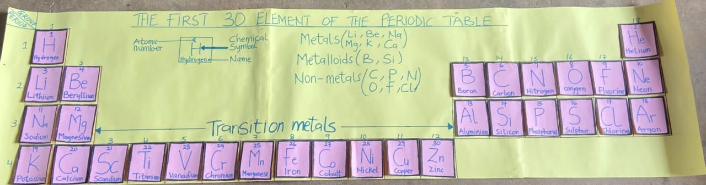

Professional Development
Where I am now, and where I am going.
My goal is to keep improving my professional skills so that I can support learners academically and socially.
Learning

Skills I Am Developing
The skills I am building as a Science student teacher.
Current Focus
Subject Knowledge
Strengthening my Science knowledge and teaching methods.
Learning Resources
Developing a wider range of suitable teaching materials.
Differentiation & Assessment
Supporting every learner and using results to plan.
Learning from Others
Continuing to learn from experienced educators.
Recent Learning & Progress
Internship
Taught Basic 7 Science at Butumagyebu S.T.M.A Primary/JHS under my mentor Joseph Slee Quayson, 15th September – 20th October 2026.
Student Reflective Journals
Completed both Year 2 journals at Butumagyebu: induction, curriculum study and a classroom enquiry (Semester 1), then teacher professionalism and portfolio building (Semester 2).
Internship Portfolio
Compiled my TSTS 102 portfolio: lesson plans, TLMs, assessment samples, journal entries and self-evaluation.
Teaching e-Portfolio
Bringing my work together in this online portfolio.
Career Goals
What I am working towards as a teacher.
Better Teaching Methods
Develop better teaching methods that help learners understand lessons easily.
Good Examination Results
Help my learners achieve good results in their examinations.
Character & Values
Teach learners discipline, respect, honesty and responsibility.
A Safe, Friendly Classroom
Make my classroom safe, friendly and comfortable for learning.
Keep Growing
Keep learning and improving, so I become an effective and successful teacher.
My Growth Mindset
Each lesson offers an opportunity to notice what worked, what could be improved and how learners responded.
Education Foundation
B.Ed JHS Specialism (Science)
University of Ghana, Legon
My B.Ed gives me the knowledge and methods to teach Science well at the Junior High level.